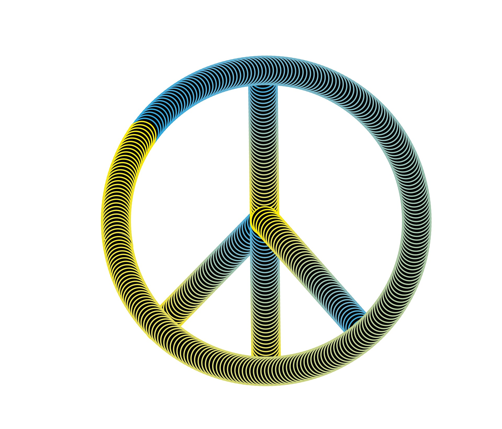
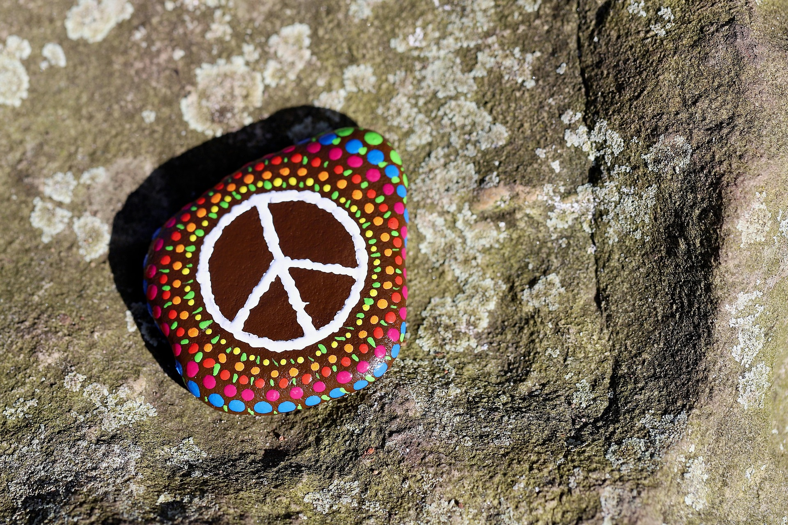
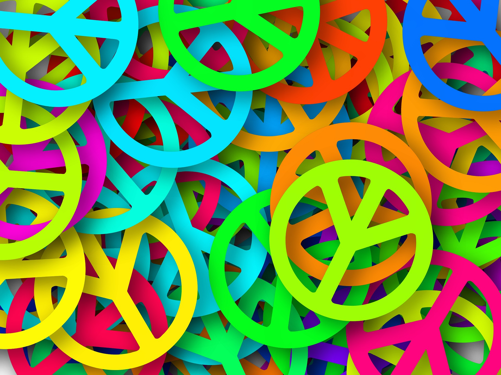
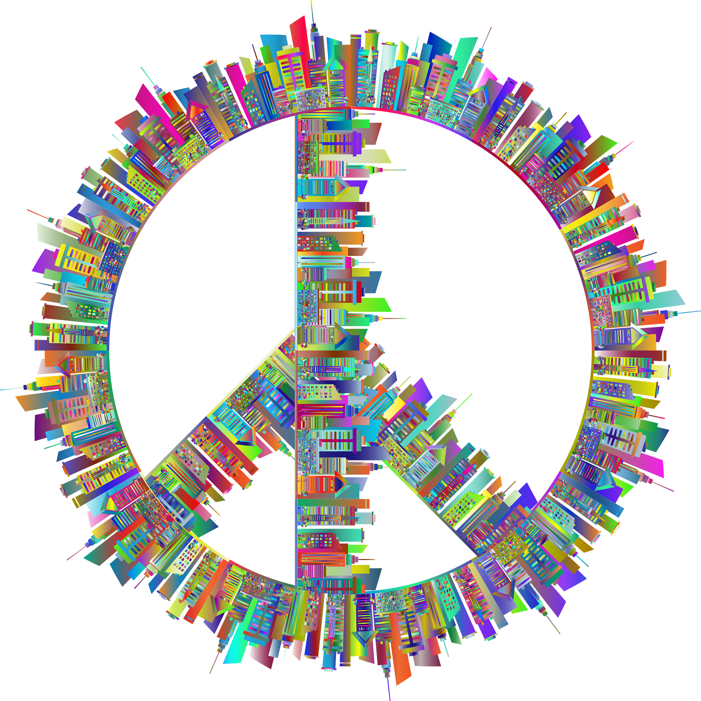
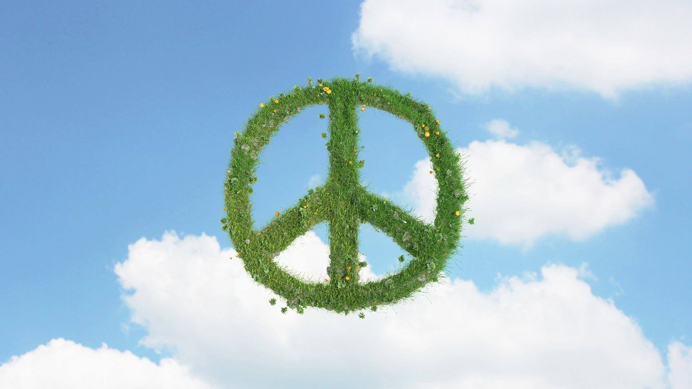
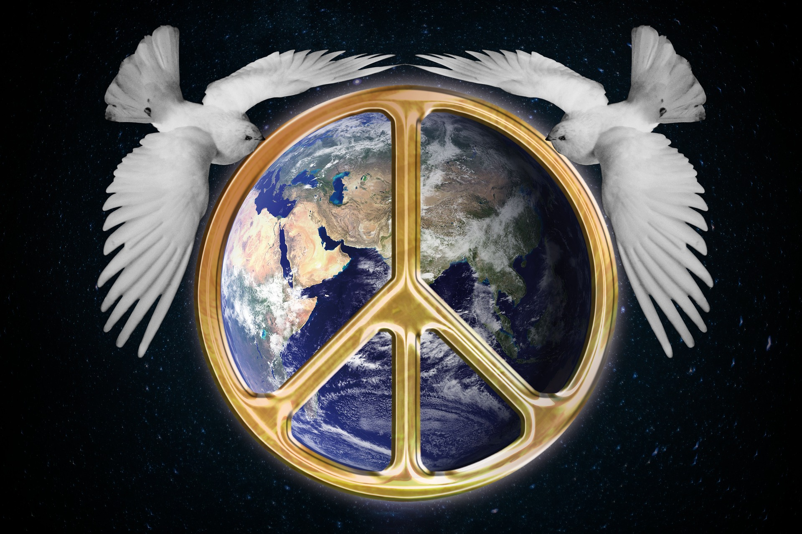
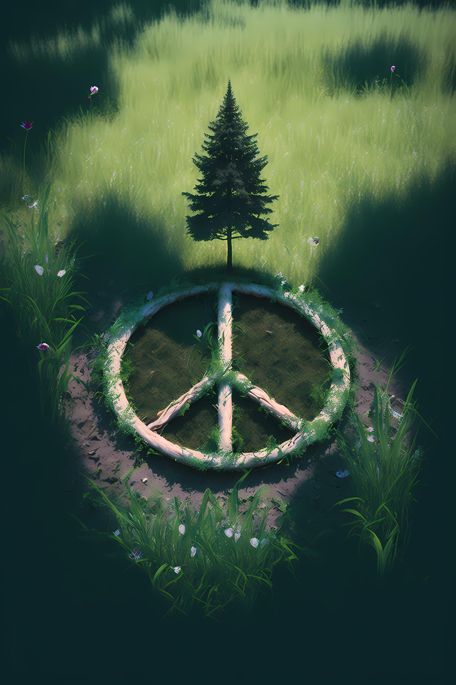
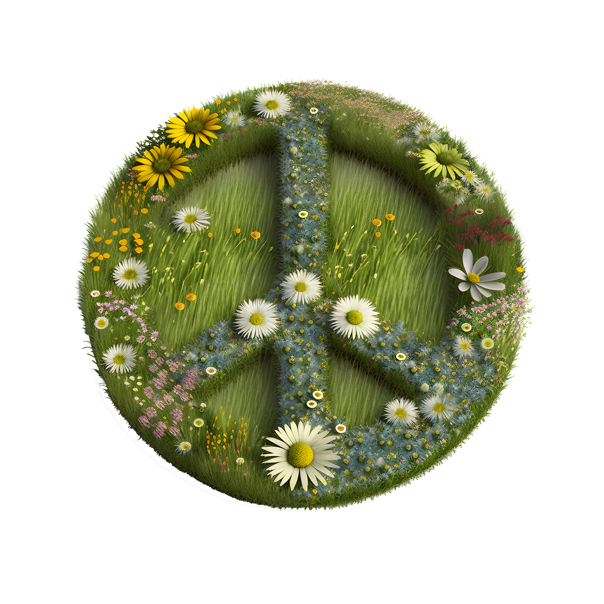
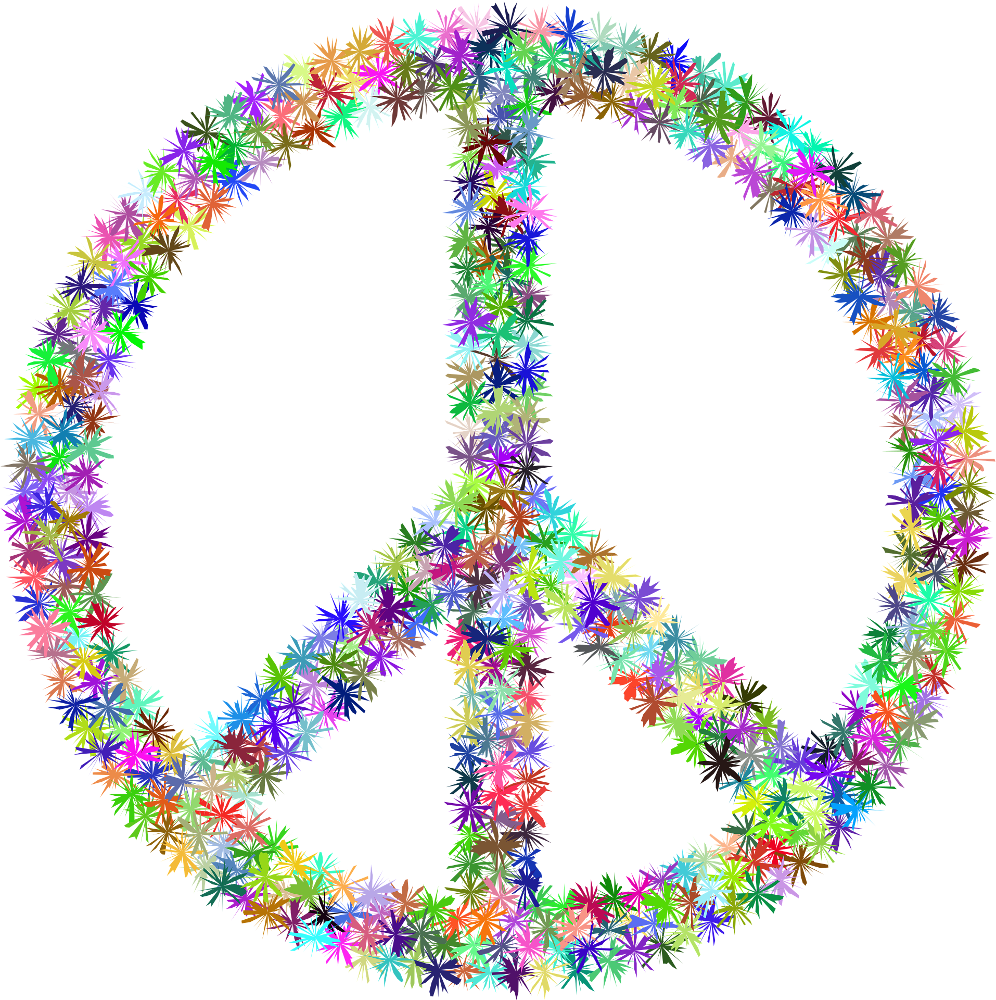

Peace
Unshakeable stillness that absorbs chaos without reaction.

Vocal Anchoring
When you encounter, fussing, screaming, or nagging, it's very powerful refusal when you refuse to respond in kind. Speaking normally, in a calm voice, offering sensible answers cools the environment and starves the agitator of the expected reaction.

Physical Stillness
There's nothing cowardly or passive about absorbing a physical blow -- or dodging it -- and then not returning it. It demonstrates stamina and control, and robs the opponent of their power by refusing to engage. Destruction and violence is not often necessary; when it is, you'll be able to respond just enough to stop the violence, no more.

Refusing Insults
Insults have to be recieved to carry any weight. Peace is the ability to hear verbal manipulation, understand where it's coming from, and then just let it fall on the floor. You don't have to catch everything that someone throws at you.
Dropping the Rope
Conversational tug-of-war, where someone is trying to draw you into an argument by trying to pull you off balance, is a game that no one actually wins. Simply let go. Refusing to join a pointless power struggle removes the possibility of conflict.

Letting Others Be Wrong
It's exhausting to try to win every argument or correct every errant opinion. Recognize that someone else's misunderstanding is yours to fix, especially if they won't listen.
The Boundary of Exit
Recognize when an environment or conversation has become completely circular or abusive, and calmly leave the room. You do not need permission to remove yourself from a destructive situation.

The Intentional Pause
When faced with an inflammatory text or email, wait an hour -- or a day -- before replying. The delay starves your immediate emotional reaction and re-establishes your logical control over the interaction.

Silence as a Complete Sentence
When pressed for justifications by a hostile interrogator, choose to say nothing. You withhold the very ammunition they are seeking to continue the conflict, leaving them to argue with a wall.

Observing Without Internalizing
Let group drama or external chaos unfold like a detached spectator. You can witness a fire burning without stepping into it and setting yourself alight.

De-escalation Through Curiosity
Meet a sudden, angry accusation with a calm, neutral question like, "Why do you feel that way?" It forces the aggressor to stop attacking and start explaining their logic.

The Unapologetic 'No'
Decline a chaotic invitation or an unreasonable demand without offering a lengthy list of excuses. A simple, polite refusal acts as a complete and impenetrable shield.

Protecting the Baseline
Refuse to consume outrage-driven media or engage in stressful arguments first thing in the morning, or ever. Guard your peace so it can anchor you.